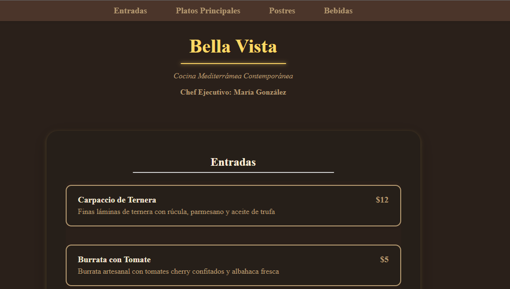

Hola, soy Felipe Pérez
Diseñador web y UX/UI enfocado en crear experiencias digitales simples, funcionales y elegantes.
Ver proyectosProyectos destacados

Menú Digital Bella Vista
Diseño de menú digital para restaurante de cocina mediterránea contemporánea.

Perfumería Essence
Desarrollo de e-commerce completo para perfumería, con catálogo de productos, carrito de compras y sistema de pagos integrado.
Estudio Jurídico Central
Landing page profesional para estudio de abogados, diseñada para generar confianza y facilitar el contacto con nuevos clientes.
Sobre mí
Soy un diseñador web con enfoque UX/UI que busca la armonía entre estética y funcionalidad. Me gusta trabajar con código limpio (HTML, CSS y algo de JS) y priorizar la experiencia del usuario en cada proyecto que realizo.
Servicios
-
Diseño UX/UI
Creación de interfaces intuitivas y experiencias de usuario centradas en las necesidades del usuario final, con wireframes, prototipos y testing de usabilidad.
-
Maquetado web (HTML y CSS)
Desarrollo front-end con código limpio y semántico, utilizando las mejores prácticas de HTML5 y CSS3 para crear sitios web rápidos y accesibles.
-
Experiencia de usuario
Análisis y optimización del journey del usuario, investigación de usuarios, arquitectura de información y mejora continua de la experiencia digital.
-
Diseño responsive
Desarrollo de sitios web que se adaptan perfectamente a cualquier dispositivo, desde móviles hasta pantallas de escritorio, garantizando una experiencia óptima.
Contacto
Para más información, contactar con: